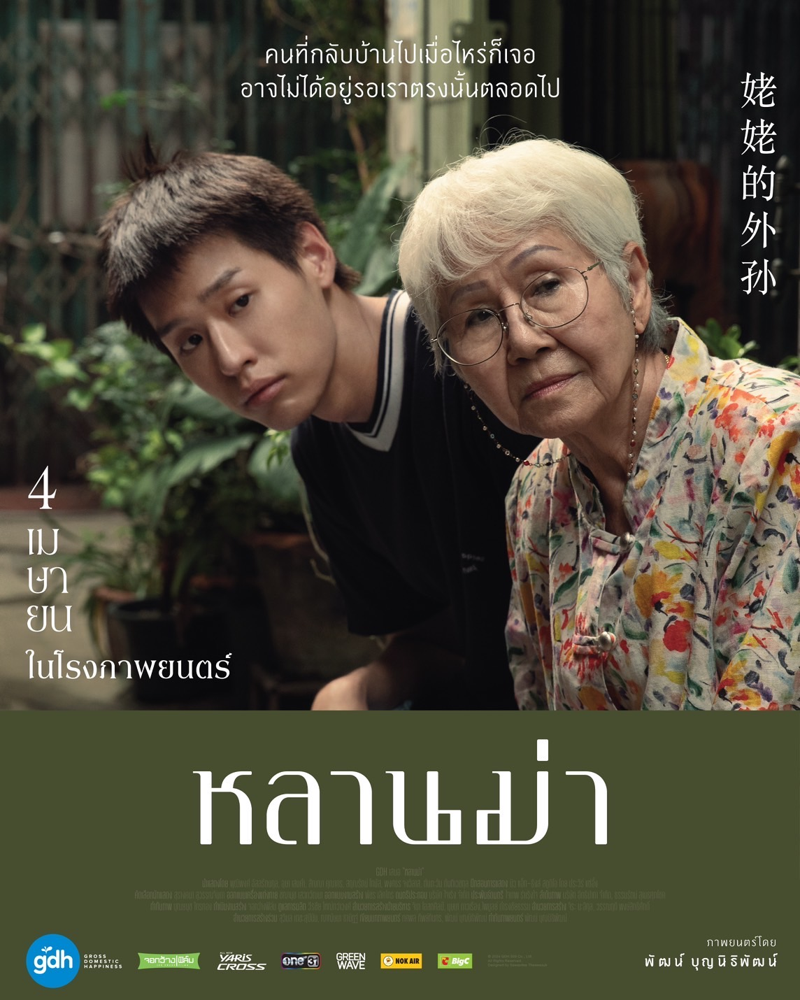

Genre : Drama
กำกับโดย: พัฒน์ บุญนิธิพัฒน์
เนื้อเรื่องย่อ
เอ็ม ที่ตัดสินใจดร็อปเรียนตอนปีสี่ เพื่อมาเอาดีทางการเป็นนักแคสต์เกม แต่ทำยังไงก็ไม่รุ่ง เอ็มเลยคิดจะรวยด้วยการทำงานสบายๆ แบบ มุ่ย ลูกพี่ลูกน้องที่รับดูแลอากงที่ป่วยระยะสุดท้าย จนกลายเป็นทายาทคนเดียวที่ได้รับมรดกเป็นบ้านราคากว่าสิบล้าน เส้นทางการเป็นเศรษฐีรออยู่ตรงหน้า เอ็มจึงอาสาไปดูแล อาม่า ที่ตรวจพบว่าเป็นมะเร็ง และน่าจะมีชีวิตอยู่ได้อีกไม่เกินปี โดยหวังจะได้มรดกหลักล้านเช่นกัน...
ดูเพิ่มเติมGenre : Dystopia scifi, teen adventure, action, drama
กำกับโดย: Francis Lawrence
เนื้อเรื่องย่อ
เป็นเรื่องราวที่ย้อนไปในช่วง 64 ปีก่อนที่ทั้งโลกได้รู้จักกับ แคทนิส เอเวอร์ดีน พร้อมกับเหล่าตัวละครชุดใหม่ที่ต่างเป็นกุญแจสำคัญในเหตุการณ์การแข่งขันเดอะ ฮังเกอร์ เกมส์ ครั้งที่ 10 หรือเกมล่าชีวิตที่ไม่มีใครเคยเห็น เต็มไปด้วยความเข้มข้นและโหดร้ายกว่าครั้งไหน นำโดย ลูซี่ เกรย์ (เรเชล เซกเลอร์) เด็กสาวบรรณาการจากเขต 12 และ คอริโอลานุส สโนว์ (ทอม บลายธ์) พี่เลี้ยงคนสำคัญของลูซี่…
ดูเพิ่มเติม